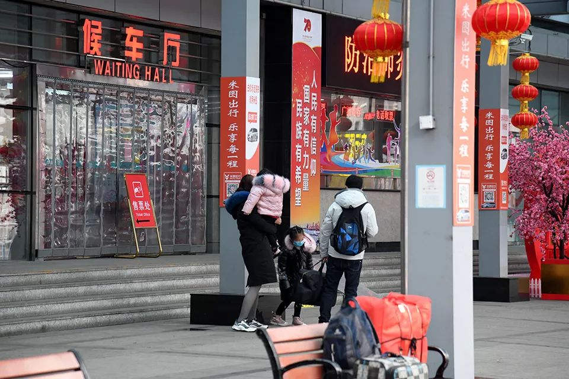

排查、劝返、大喇叭、封路，农村这样防肺炎
原文链接 备份链接 《战疫口述记》，是燃财经在新型冠状病毒肺炎期间推出的特别栏目，记录疫情亲历者的观察和感受。本文为第2期，第1期请见《我在武汉战肺炎》。 作者 | 闫丽娇 唐亚华 孟亚娜 金玙璠 黎明 孔明明 苏琦 编辑 | 周昶帆 春 …

*************▲************* 1月27日，旅客在关闭的青岛汽车总站外徘徊。 （新华社记者 李紫恒/图）
全文共*1705*字，阅读大约需要*4*分钟。
我们村“封”在村里的年轻人每天猫在家里玩手机，看电影，一觉睡到自然醒，倒是过上了梦想中的日子。可我总觉得心里空落落的，还有一丝莫名的惶恐。
本文首发于南方周末 未经授权 不得转载
文 | 于静
责任编辑 | 温翠玲
庚子鼠年的春节，注定要成为几代人的共同回忆，虽然这些回忆充满了沉重。多年后，发生在这个春节的很多人和事儿都会被反复提及，不论官方，还是民间。作为亲历者，我能做的只是记录下发生在自己身边的一些事情，以及切身的感受，至于有无意义，不做计较。
我的老家在胶东一个不到百户的小山村，和中国很多农村地区一样，鼠年春节前几天，在外的年轻人陆续返乡，但也有一些人选择将父母接到城里过年。那时候外面的疫情其实已经很严重，但是因为本村相对封闭，又没有从武汉回来的人，所以气氛一直不是很紧张，三十晚上，烟花照放，初一早晨，拜年依旧。
从大年初二开始，气氛陡变。初二上午本来打算去药店买口罩，沿路发现有的村庄已经在门口拉上了警戒线，禁止外来车辆人员进入，但还只是个别，大多数村庄仍然没有采取封闭措施，车辆一路畅通。半路上接到舅舅家表弟电话，他在镇上经营了一家农资门市，人年轻，头脑精明，告诉我他年前听说疫情就买了好几包口罩备用，于是去他那里拿了一包。晚上同学群里有人说也去买口罩了，40元一个。更加佩服表弟的精明。
中午回来的时候，沿路几乎所有的村庄都封闭了，有的在路口设卡拦阻，有的直接用一辆大卡车堵住通往村庄的必经之路，连值守的人也省了，绕了好几个圈才回到家里，很快村里也“封村”了。
其实在初一晚上就有“封村”消息在微信群流传，所以，“封村”前，各村的不少人已经提前返城，我表弟一家就在初二早晨匆匆离开，虽然他们的假期都还不到。不过听说市里很多小区也采取了封闭措施，并且超市里的米面和蔬菜也出现不同程度的抢购。现在看来，还不如被“封”在村里，最起码不愁吃喝，今年没有亲戚互相串门，家家过年备的年货都够吃上好一阵了。
现在村里基本没有串门的，街面上也很少看到人员走动。以前过年时村前广场上停满了车辆，如今则冷冷清清。我们村“封”在村里的年轻人（还有二三十人），大家都一样，每天猫在家里玩手机，看电影，一觉睡到自然醒，倒是过上了梦想中的日子。可我总觉得心里空落落的，还有一丝莫名的惶恐。
农村医疗条件差，村民对病毒的防范意识又普遍较低，“封村”确实是一个最简单、最有效的办法。但是看了网上一些“封村”的视频，以及亲历封村这两天的感受，窃以为，农村“封村”完全可以做得更人性、更完善一些。
比如网上流传一些村庄用挖掘机挖断道路，用工程车运来土石堵在村口，这样“封村”就太过了。村民有急事外出怎么办？一旦有村民突发疾病，或者村里发生失火意外，救护车和消防车怎样进来？
就在我写这篇文章的时候，回头一瞥，发现侄子正在用水果刀削苹果，吓得我赶忙制止。我们这样的小村庄没有医疗室，以往村民有个轻伤，或者感冒发烧都会到周边有医疗室的村庄治疗，现在村村封路，周边的村子不是用车辆堵在村口，就是设卡拦截外来人员和车辆。这时候如果划破手，或者有个头疼脑热，只能走没有封闭的大路，去很远的镇里或者县里的医院了。
有些村庄的做法就比较好，他们派专人在村口负责检查登记，拦截陌生车辆和人员，劝阻前来访亲拜友的外村人员，对于本村村民确实有急事需要外出和返回，做好相关人员和车辆登记后，会放行通过。
疫情汹涌，虽然被“封”在村中，哪里也去不了，什么也干不成，但是相信大多人都理解和配合。但是最后还是要说一遍：封村不是粗暴挖路，以邻为壑，封村不能阻碍生命通道，封村不能不顾及民生需求。
（作者为山东青岛企业职员）
（南方周末App“hi，南周”栏目期待您的来稿。投稿邮箱：nfzmreaders@163.com）

征集

《南方周末》现向所有身处新冠肺炎一线的读者公开征集新闻线索。我们欢迎武汉及周边城市医患联系记者，提供防疫前线的一手资讯，讲述您的新春疫情见闻。若您不在武汉，但您身处之所也有与疫情相关的重要新闻线索，亦欢迎您与我们分享。疫情仍在蔓延，南方周末将执笔记录每位国人在疫情面前的希望与困境，与广大读者共同面对疫情。祝愿所有读者朋友们，新春平安。线索可直接给本篇文章留言，格式为：【线索】+内容+您的电话（绝对会对您的个人信息保密）


原文链接 备份链接 《战疫口述记》，是燃财经在新型冠状病毒肺炎期间推出的特别栏目，记录疫情亲历者的观察和感受。本文为第2期，第1期请见《我在武汉战肺炎》。 作者 | 闫丽娇 唐亚华 孟亚娜 金玙璠 黎明 孔明明 苏琦 编辑 | 周昶帆 春 …
原文链接 备份链接 *************▲************* 1月24日，在武汉大学中南医院重症隔离病房，医护人员对病人进行治疗。（新华社记者 熊琦/图） 全文共*927*字，阅读大约需要3分钟。 正确地引导，恐慌能让群众 …
原文链接 备份链接 _截止到大年初二（1月26日），村里通往外面的路完全封了，只出不进。村里没有多少口罩，疫情开始严重前，镇上就买不到口罩。直到1月22日，从外地做生意归乡的亲人中，还有人根本不知道这次疫情。_ 出品|网易清流工作室 作 …
原文链接 备份链接 *▲ *2020年1月24日，在武汉大学中南医院重症隔离病房，医护人员为病人治疗。 （新华社记者 熊琦/图） 全文共*3298*字，阅读大约需要*7*分钟。 有医生刚脱下工作服，巨大的压力让其瞬间变身“小女生”坐在房 …
原文链接 备份链接 鄂西乡间，村里开始贴上有关疫情的通告。向思琦摄 全文共*3498*字，阅读大约需要*7*分钟。 在武汉之外的湖北农村，1月23日，才是众多村民意识到疫情严重的“关键日”。在那天，武汉开始“封城”。 与突如其来的巨大 …